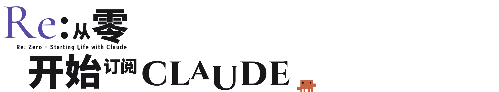
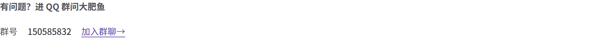

读者反馈
已经有人
订阅成功了
第一次订阅
Claude
只想一次成功
新手常见的三种结局
注册不了
付不了款
用两天被封
回到起点
重来
每卡一次，就像来了一次死亡回归。
别人已经替你
死亡回归过了
我把他们踩过的坑，写成了一份照着做的说明书
https://re0claude.us.ci/https://re0claude.us.ci/register-claude/


https://re0claude.us.ci/
一份照着做的
说明书
5 章，一台电脑加一部手机。
从第 00 章开始，一页一页往下点。
一页只做一步
操作版
照着点就行
每一步要做什么，
列成一条一条。
原理版
讲清楚为什么
想知道它为什么这么要求，
页面顶上一键切过去。
每一章开头
一句话告诉你，这一章在干什么
5 章就是 5 个存档点：卡在哪一章，就从哪一章读档。
卡住了？
进 QQ 群问大肥鱼
群里的 AI 嘉宾，24 小时在线。教程哪一步卡住了都可以问她，也可以随便聊。
网址
https://re0claude.us.ci/
QQ 群 150585832
网址和群号都在简介和置顶评论
本站是个人教程，与 Anthropic 无关。